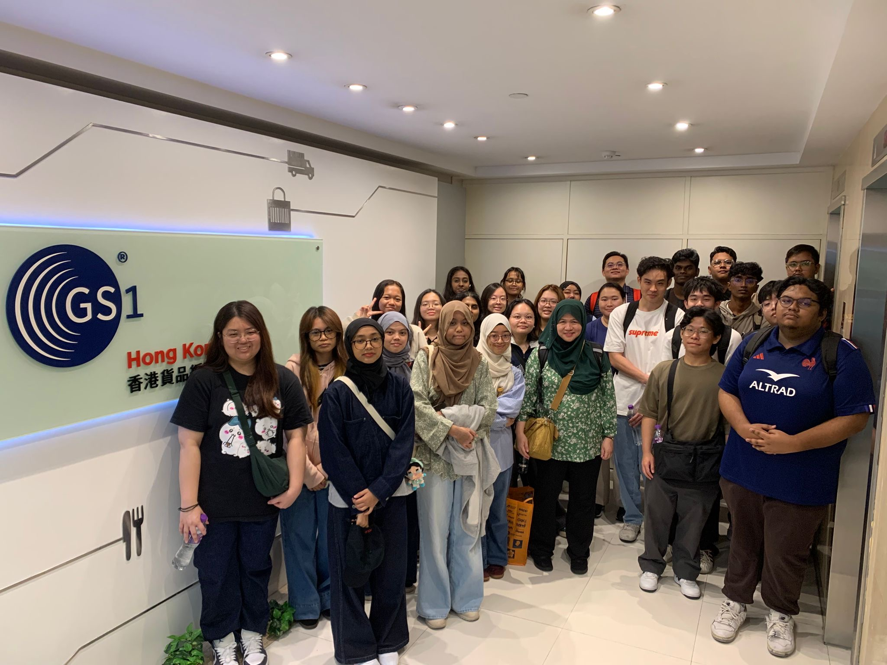
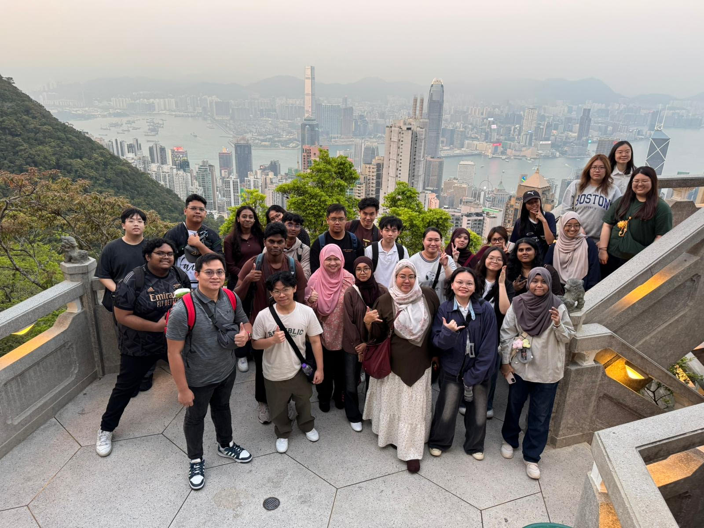

INTERNATIONAL EXPERIENCE · HONG KONG · MARCH 2026
Learning beyond the classroom.
Student Overseas Trip to Hong Kong · Republic Polytechnic School of Infocomm
Exploring technology in Hong Kong.
In March 2026, I travelled to Hong Kong with Republic Polytechnic’s School of Infocomm. It was a chance to see how technology is used beyond the classroom and experience a different culture alongside my schoolmates.
We visited organisations and educational institutions to learn about real-world applications of technology, from supply chain systems to AI and student innovation.

What we explored.
At GS1 Hong Kong, I learned how barcodes and RFID technology help businesses manage everyday operations, especially in logistics and supply chains. It was interesting to see the role these familiar technologies play on a larger scale.
At the Hong Kong Science Museum, the interactive exhibits made scientific and technological ideas easier to understand and explore.
Visiting Cyberport gave me a closer look at emerging AI technologies and how the hub supports new ideas through mentorship, resources and funding opportunities.
At the Hong Kong Institute of Information Technology, we explored students’ AI and technology projects and learned about their approach to technology education. I enjoyed seeing what students in another learning environment were working on.
Experiencing the city.
We also explored places such as Mong Kok, Repulse Bay and Victoria Peak. These visits gave me a better feel for Hong Kong’s culture, city life and scenery.
Overall, the trip helped me connect what I learn in school with practical applications, while gaining a broader perspective on technology and learning in another place.
